SushiCloud, a personal music archive from 2012 to now
2012 – now
Works in progress
Live visualizer

About the maker
Howzit bah. Glad you found me. I've been making music for over a decade now, and this website holds almost my entire catalog of stuff I've done over the years.
I swing between a ton of different genres: Electronic, Big Room, Liquid DnB, Hardstyle, Techno, IDM, etc. Some of my biggest artist inspirations include: Deadmau5 (bro is literally the reason why I started doing this in the first place), Kill The Noise, Feed Me, Noisia, Skrillex, Fre4knc, ISOXO, and Knock2, just to name a few. Aside from my music production, I'm also a self taught pianist and I've been playing ever since I was 10 years old.
Anyway, each album represents the year of all the music I created, but did not post anywhere. You may find a bunch of redundant songs or re-used themes everywhere. Thanks for visiting and I hope you enjoy!
music
on piano